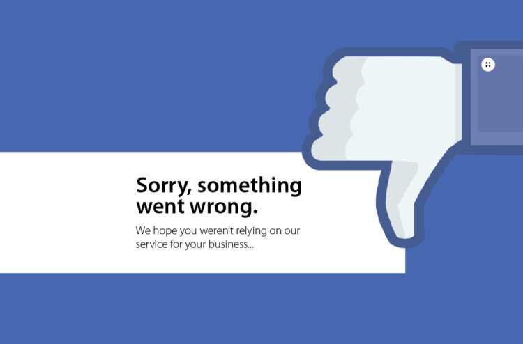

A1 Facebook exposed (acc), a testimony threatens (acc) Europe awoke, [the] blackout (pp).
bolster means to supportcrash
crash is a hit 
A2 Facebook exposed (acc), just as a testimony threatens (pp) While Europe awoke, Monday’s blackout led. The European Union’s antitrust chief, Margrethe Vestager, said (pp)
B1 Facebook Inc.’s crash exposed (acc), , just as a whistle-blower’s testimony threatens (pp) While Europe awoke, the scale of Monday’s blackout led (pp). The European Union’s antitrust chief and digital czar,Margrethe Vestager, said the Facebook failure(pp)
B2 Facebook Inc.’s crash exposed the risks, bolstering European regulators’ drive (pp), just as a U.S. whistle-blower’s testimony threatens to attract (pp) While Europe awoke, the scale of Monday’s blackout led to criticism. The European Union’s antitrust chief and digital czar, Margrethe Vestager, said the Facebook failure would focus (pp)
C1 Facebook Inc.’s crash exposed the risks of relying on its products, bolstering European regulators’ drive to contain (pp), just as a U.S. whistle-blower’s testimony threatens to attract scrutiny . While Europe awoke, the scale of Monday’s blackout quickly led to criticism. The European Union’s antitrust chief and digital czar, Margrethe Vestager, said the Facebook failure would focus minds on the company’s dominance.
C2 Facebook Inc.’s worldwide crash exposed the risks of relying on its social networking products, bolstering European regulators’ drive to contain its reach just as a U.S. whistle-blower’s testimony threatens to attract more unwanted scrutiny at home. While Europe awoke to find Facebook, Instagram, WhatsApp and Messenger services back online, the scale of Monday’s blackout quickly led to criticism. The European Union’s antitrust chief and digital czar, Margrethe Vestager, said the Facebook failure would focus minds on the company’s dominance.